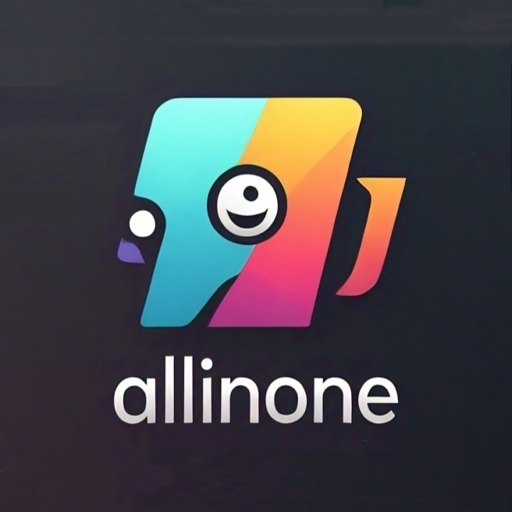

Welcome to Our Website

Special Announcement
Check out bots and other youtub channel if you have your YouTube channel join our discord server and anyone because our website server team they also join our discord server and make ticket for it
Welcome to our website Check out our services and explore the bots available for your Discord server.